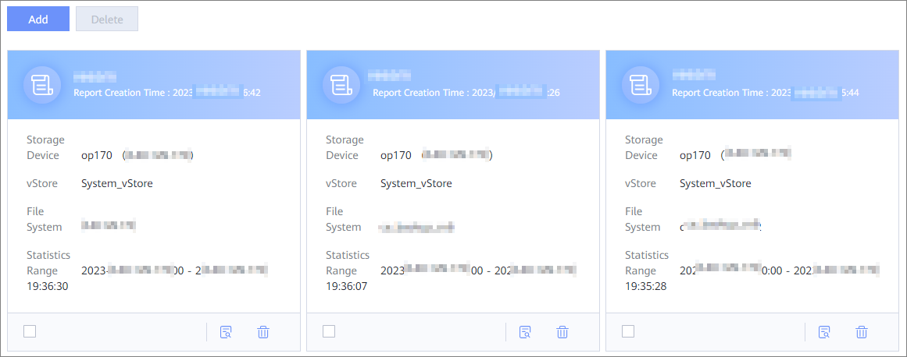

This section describes how to view a data security report.
Procedure
- In the navigation pane, choose Reports. The report overview page displays the report name, Report Creation Time, Storage Device, vStore, File System, and Statistical Range.

- Click in the lower right corner of the report to be viewed. The detailed report is displayed. The report provides the latest infected snapshots, historical detection snapshots, and the protected object list of the latest snapshot. The report pages of intelligent detection and real-time detection are slightly different.
- Click a protected object to view the detection status of copy files in the protected object.
- View information about protected objects of Veeam. The report shows the copy file status of a protected object.
- View information about protected objects of NetBackup. The report shows the detection status of the latest infected copy files and copy files of protected objects.
- View information about protected objects of Commvault. The report shows the detection status of the latest infected copy files and copy files of protected objects.

The number of files displayed in the report may be greater than that of original files. This is because files may be split due to the backup policy of the backup software.